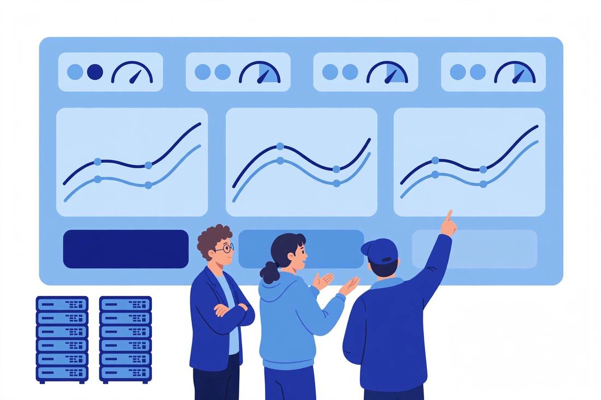

監視設計の考え方 ― 監視項目は「何が止まったら誰が困るか」から決める
2026.11.28
監視は、システムが動いているかどうかを見張る仕事だと思われがちです。 けれども、監視の本質は「何かあったときに、誰が、どう動けるか」をあらかじめ決めておくことにあります。 監視項目を増やせば安心できるわけではありません。 むしろ、監視の設計があいまいなまま項目だけが増えると、通知があふれ、本当に大切な変化が見えなくなってしまいます。
この記事では、監視項目を「何が止まったら誰が困るか」から決める考え方と、通知の設計、見直しの回し方を整理します。 監視をツール導入の話ではなく、運用の設計として進めるための考え方です。

監視項目は「何が止まったら誰が困るか」から決める
監視設計の出発点は、システムの構成図ではなく、利用者の困りごとです。 ある機能が止まったときに、誰が、どんな仕事に困るのか。 そこから逆算して、監視すべきものを決めていきます。
たとえば、社内の業務システムであれば、朝一番に使う機能が止まれば、その日の業務全体が滞ります。 利用者が多い時間帯に止まれば、問い合わせが一気に増えます。 同じ「止まる」でも、影響の大きさは利用者と時間帯で変わります。 だからこそ、監視項目は「何が止まったら誰が困るか」という問いから決めるのです。
逆に、止まっても誰も困らないもの、止まったことに気づくのが遅れても問題にならないものは、監視の優先度を下げてよいのです。 監視は、すべてを同じ重さで見るものではありません。 困る順番に並べ、重いものから確実に見ていく。 それが監視設計の第一歩です。
この問いを立てるときは、運用の担当者だけで決めず、システムを使う側の人にも話を聞くことが大切です。 運用側から見ると些細な機能でも、利用者にとっては業務の要になっていることがあります。 利用者の声を聞くことで、監視の優先順位は現場の実態に近づきます。
監視する対象を「利用者への影響」で並べ替える
「何が止まったら誰が困るか」が決まったら、次は監視する対象を整理します。 システムの部品単位で並べるのではなく、利用者への影響の大きさで並べ替えるのです。
部品単位で並べると、監視項目は際限なく増えていきます。 サーバ、ネットワーク、ディスク、プロセス、サービスの数だけ項目が増え、どれが大切なのか分からなくなります。 けれども、利用者の影響で並べ替えると、見るべき順番が自然と決まります。 まず利用者が直接使う機能の状態を見る。 次に、その機能を支える土台の状態を見る。 こうした順番がつくと、監視項目の全体像が見通しやすくなります。
また、影響で並べ替えることには、もう一つ利点があります。 何かあったときに「どこから確認するか」の順番が決まることです。 利用者から「使えない」という連絡があったとき、影響の大きいところから順に確認していけば、原因にたどり着くまでの道筋が短くなります。 監視の並び順は、そのまま調査の順番にもなるのです。
監視項目を決めるときは、「監視するもの」と「監視しないもの」を分けて記録しておくこともおすすめです。 監視しないと決めたものは、理由と一緒に残しておきます。 あとから「なぜ監視していないのか」と聞かれたときに、判断の根拠が残っていると、チームの認識がぶれにくくなります。
通知の設計 ― 誰に、いつ、どう伝えるか
監視項目が決まったら、次は通知の設計です。 通知は「来ればよい」というものではありません。 誰に届き、その人がどう動くかまで決めて初めて、通知は意味を持ちます。
通知を設計するときに決めたいのは、三つのことです。 誰に届けるか、いつ届けるか、どんな内容で届けるかです。 届ける相手は、対応できる人でなければなりません。 夜間に対応できない人に深夜の通知が届いても、対応は翌朝まで待たれてしまいます。 相手と時間帯をセットで考えることが大切です。
また、通知の内容も大切です。 「何かがおかしい」というだけの通知では、受け取った人は何から確認すればよいか分かりません。 どの機能に、どんな影響が出ているのか、次に何を確認すればよいのかが分かる通知にすることで、対応の初動が速くなります。
通知の量にも注意が必要です。 通知が多すぎると、受け取る人は次第に通知を見なくなります。 いわゆるアラート疲れです。 通知が来ても「またか」と思われてしまうと、本当に大切な通知も見逃されます。 通知は、対応が必要なものだけに絞る。 絞るためには、監視項目の見直しとセットで、通知の条件も見直していくことが欠かせません。
監視の見直しを続ける ― 監視も育てるもの
監視は、一度作ったら終わりではありません。 システムは変わり、利用者の使い方も変わります。 監視の設計も、それに合わせて育てていく必要があります。
見直しのきっかけは、日常の仕事の中にあります。 通知が来たときに「これは対応が要らなかった」と思った経験、逆に「気づくのが遅れた」と感じた経験、こうした小さな気づきが、見直しの種になります。 気づいたときにメモしておき、定期的に振り返る場を持つことで、監視は少しずつ現場に合っていきます。
見直しの場は、運用の定例の中に組み込むのがおすすめです。 月に一度でも、通知の件数や対応の記録を眺めながら、「もう要らない通知はないか」「見逃した変化はなかったか」を話し合います。 監視の見直しを特別な作業にせず、日常の仕事の一部にすることで、続けやすくなります。
見直しを続けると、監視項目は増えるだけでなく、減ることもあります。 要らなくなった監視を外すことは、監視の質を保つ大切な作業です。 監視項目が増え続けるのではなく、必要なものだけが残る状態を保つ。 それが、長く使える監視の姿です。
まとめ
監視設計の考え方を整理すると、次のようになります。 まず、監視項目は「何が止まったら誰が困るか」から決める。 次に、監視する対象を利用者への影響で並べ替え、調査の順番も決めておく。 そして、通知は誰に、いつ、どう伝えるかまで設計し、対応が必要なものだけに絞る。 最後に、見直しを続けて、監視を現場に合わせて育てていく。
監視は、システムを見張るためだけの仕組みではありません。 「困ったときに、誰がどう動くか」を支える、運用の設計です。 監視の項目や通知に迷ったときは、原点の問い――「何が止まったら、誰が困るのか」――に立ち返ってみてください。 そこから、監視のあるべき姿が見えてきます。
このブログでは今後も、運用設計や監視の仕事について、現場の視点から書き続けていきます。
← Blog一覧へ戻る